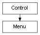

class cymel.ui.menu.Menu¶

- class cymel.ui.menu.Menu(*args, **kwargs)¶
Bases:
Controlmenu wrapper class for mel UI.
setParent can be done with
with.Methods:
child([idxOrPath])Get the menu item below the hierarchy.
Get a list of child menu item names.
children()Get a list of child menu items.
clear()Delete all child menu items.
Get the current parent menu.
Make this the current parent menu.
Get the number of menu items.
pop()Move the current parent menu up one level.
Method Details:
- UICMD()¶
- child(idxOrPath=0)¶
Get the menu item below the hierarchy.
- Parameters:
idxOrPath – Child index (zero origin) or relative path down the hierarchy.
- Return type:
- clear()¶
Delete all child menu items.
- makeCurrent()¶
Make this the current parent menu.
- static pop()¶
Move the current parent menu up one level.